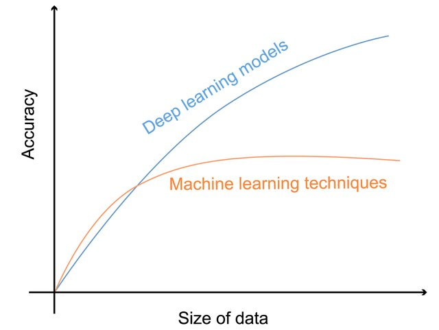
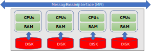
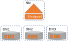
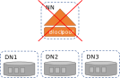
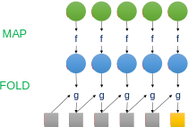
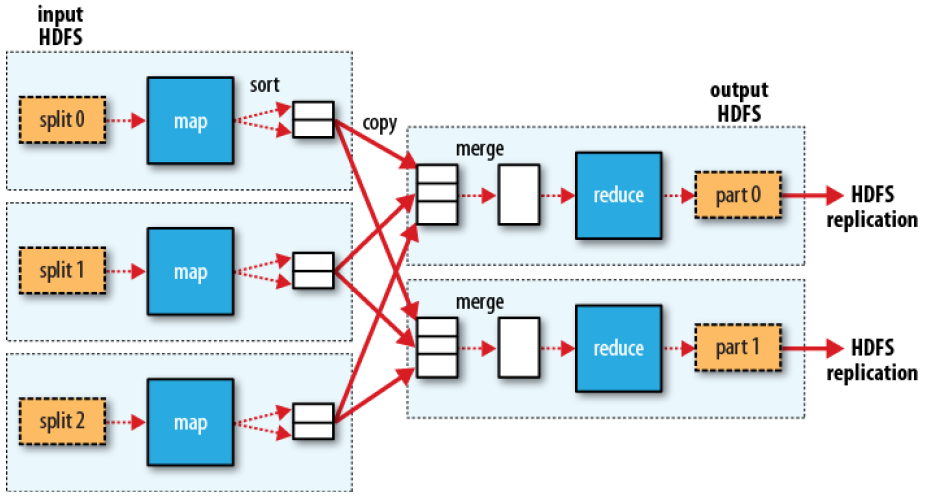
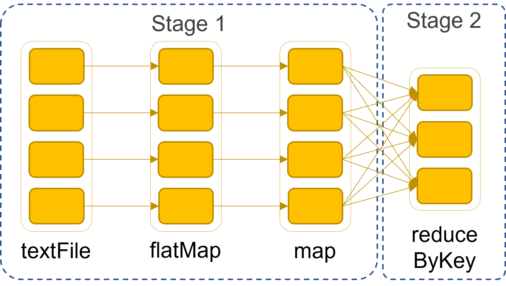
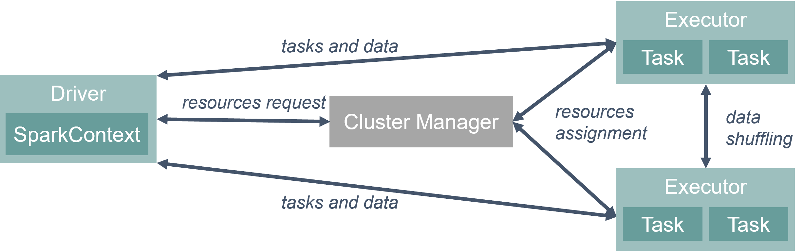

Data Platforms and Artificial Intelligence
Challenges and Applications
Matteo Francia
DISI — University of Bologna
m.francia@unibo.it
Hi!
Matteo Francia, Ph.D.
Teaching
- [DTM] Big Data and Cloud Platforms (Module 2)
- [DTM] Machine Learning and Data Mining (Module 2)
Research topics
- Big data / database / machine learning
- Application to precision agriculture and spatio-temporal analytics
BIG (Business Intelligence Group)
 https://big-unibo.github.io
https://big-unibo.github.io- Thanks to E. Gallinucci, M. Golfarelli, S. Rizzi, J. Giovanelli, C. Forresi, M. Pasini, A. Baiardi for the shared effort and materials

(Tentive) Program
Web page: https://big-unibo.github.io/phd-course-data-platforms-2526/
- Lecture 1 (Fri 2025-11-07, 13.00 - 17.00, room 2.7 – Cesena Campus): Introduction to Big Data
- Lecture 2 (Fri 2025-11-21, 13.00 - 17.00, room 2.7 – Cesena Campus): Data Platforms and Polyglot Persistence
- Lecture 3 (Fri 2025-11-28, 13.00 - 17.00, room 2.7 – Cesena Campus): Smart Management of Data Platforms
“Exam”
To get CFUs, write and send me a short essay (about 4/5 pages using this IEEE template)
- Deepen at least one of the covered topics
- Discuss relationships between your research interests and the topics presented in the course
Or… submit a paper! We have an open special issue on this topic
We are open to collaborations :)
Lecture 1: what we are going to do
- Introduction to Big Data
- Architectures
- Hardware
- Software
- Data storage
- Data processing (batch, interactive, streaming)
- Reference architectures
Why data matters
Data-Driven Innovation
- Use of data and analytics to foster new products, processes and markets
- Drive discovery and execution of innovation, achieving new services with a business value
Analytics
- A catch-all term for different business intelligence (BI)- and application-related initiatives
- E.g., of analyzing information from a particular domain
- E.g., applying BI capabilities to a specific content area (e.g., sales, service, supply chain)
Advanced Analytics
- (Semi-)Autonomous examination of data to discover deeper insights, make predictions, or generate recommendations (e.g., through data/text mining and machine learning)
Augmented Analytics
- Use of technologies such as machine learning and AI to assist with data preparation, insight generation and insight explanation to augment how people explore and analyze data
https://www.gartner.com/en/information-technology/glossary (accessed 2022-08-01)

Analytics
Define big data
The term big data comes in two flavors
- Noun: “We have big data”
- Adjective: “We use big data tools”
Big data as a noun
When does data become big ?

Big data
“Big data exceeds the reach of commonly used HW and SW environments to capture, manage, and process it with in a tolerable elapsed time.”
Teradata Magazine article (2011)
“Big data refers to data sets whose size is beyond the ability of typical database software tools to capture, store, manage and analyze.”
The McKinsey Global Institute (2012)
“Big data is data sets that are so voluminous and complex that traditional data processing application softwares are inadequate to deal with them.”
Wikipedia
Big data as a noun – The V’s
The big-data cube (Meijer 2012)
- Volume: small to big
- Variety: structure to unstructured
- Velocity: pull to push
Big data as a noun – The V’s
Volume
Velocity
- Refers to the speed of data production…
- …and to the speed of consumption and analysis
Variety
- Structured, unstructured, multimedia
Veracity
- Refers to the trustworthiness of data
- Potentially inconsistent, incomplete, ambiguous, obsolete, false, approximate
…
Big data as an adjective
- When used as a noun, the boundary between normal and big data is vague
- When used as an adjective, its meaning is more specific
- Big data architecture (e.g., the Lambda architecture)
- Big data tools (e.g., Apache Spark)
- Big data paradigm (e.g., Map-Reduce)
Why the hype?
Deep learning: accuracy vs data volume
Can we drop data to bring “big data” to “small data”?
The long tail

The long tail
The highest value does not come from the small set of highly popular items, but from the long list of niche items
- Put together, the insignificant data is actually the most valuable
- The inverse of the 80-20 Pareto rule
- Pareto principle (80/20 rule): 20% of the causes generate 80% of the value, suggesting focus on the main drivers.
- Long Tail model: the accumulation of many niche elements outweighs the mainstream.
- Applications (e.g., Amazon): collecting as much data as possible enable greater customer satisfaction and higher overall value.
Bigger = Smarter (?)
Getting value from data is not (only) a matter of storage
Bigger = Smarter (?): photo gallery
Architectures
- Hardware-wise
- Software-wise
- Data storage (files, databases)
- Data processing (batch, interactive, streaming)
- Reference architecture (components, lambda vs kappa)
Scaling
Big data is big
- It doesn’t fit a single drive
- It doesn’t fit a single (typical) machine
Processing big data requires a lot of computing resources
- Simply scaling only the disk is not an option
What do we do?
Scale up

Scaling up
Scale up: SMP
Symmetric Multi Processing (SMP)
- Several processors share the same RAM, the same I/O bus and the same disk(s)
- BUS bottleneck

Symmetric Multi Processing
Scale up
Add more processors and RAM, buying a more expensive and robust server
- Pros
- Less power consumption than running multiple servers
- Cooling costs are less than scaling horizontally
- Generally less challenging to implement
- Less licensing costs
- Less networking equipment
- Cons
- PRICE
- Greater risk of hardware failure causing bigger outages
- Generally severe vendor lock-in
- Not long-term: limited upgradeability in the future
Scale out: MPP
Massively Parallel Processing
Massively Parallel Processing (MPP)
- There are several processors, equipped with their own RAM and disks, collaborating to solve a single problem by splitting it in several independent tasks
- It is also called shared-nothing architecture
Scale out
Adding more servers with less processors and RAM
- Pros
- Much cheaper than scaling vertically
- New technologies simplify fault-tolerance and systems monitoring
- Easy to upgrade
- Usually cheaper
- Can literally scale infinitely
- Cons
- More licensing fees
- Bigger footprint in the Data Center
- Higher utility cost (electricity and cooling)
- More networking equipment (switches/routers)
Commodity hardware
- You are not tied to expensive, proprietary offerings from a single vendor
- You can choose standardized, commonly available hardware from a large range of vendors to build your cluster
- Commodity ≠ Low-end!
- Cheap components with high failure rate can be a false economy
- Example of commodity hardware specifications:
- Processor: 12-core i7-8700 CPU @ 3.20GHz
- Memory: 64 GB RAM
- Storage: 3 × 4TB SATA disks
- Network: Gigabit Ethernet
- Yahoo!’s Hadoop installation:
- 100,000 CPUs in > 60,000 computers (as of 2017)
- Used to support research for Ad Systems and Web Search
- Also used to do scaling tests to support development of Hadoop
Cluster
A cluster is a group of linked computers (nodes) that work together so closely they function as a single computer.
- Typically connected via fast LAN
- Shared-nothing: each node is a self-contained system capable of independent operation
- Offers unlimited scalability and no vendor lock-in
- Number of nodes in a cluster >> number of CPUs per node
Compute nodes are mounted on racks:
- 8–64 compute nodes per rack
- Many racks can be used in a cluster
- Nodes on a rack are linked by a network (typically gigabit Ethernet)
- Racks are connected by a higher-level network or switch
- Intra-rack bandwidth >> inter-rack bandwidth
Cesena Campus (UniBO), May 2023

Multiple clusters
Having a single large cluster that is tantalizing to many organizations
- No data silos, simpler governance
Multiple clusters are inevitable within medium-large enterprise settings
- Resiliency: every cluster sits within a single point of failure due to geography
- Legal separation
- Independent Storage and Compute
Multiple clusters
With the success of cloud services, the “independent storage and compute” solution for big data clusters is on the rise
Network is no more a problem
Scalability is modularized
- Disk and computation needs are different
Cost-efficient
- Data must be persistent, 24/7
- Compute nodes are activated only on demand
Data storage
- Distributed file system
- Distributed databases
The data lake
Big data stored in a DFS usually become a data lake: A central location that holds a large amount of data in its native, raw format

Data lake
Distributed FS
Different implementations of data lakes, relying on similar principles
- Apache Hadoop
- AWS S3
- Azure Data Lake
- GCP Colossus
HDFS
HDFS is a filesystem built to store very large files with streaming data access on clusters of commodity hardware.
- Typical file size: gigabytes to terabytes; clusters may store petabytes of data
- Access pattern: optimized for batch processing, prioritizing throughput over low latency
- File model: write-once, read-many — simplifies data consistency and boosts performance
- Fault tolerance: assumes frequent hardware failures, emphasizing fast, automatic recovery
HDFS: blocks
Block: minimum amount of data read/written
- Disk blocks are normally 512B
- Filesystem blocks are typically a few KB
HDFS blocks range between 64MB and 1GB (default: 128MB)
- If a file is smaller, it will occupy the necessary disk space, not the full block size
Why blocks?
- Files can be larger than disks. This way, storage management is simplified and replication is easier
Why this big?
- Large files split into many small blocks require a huge number of seeks
- E.g.: block size = 4KB; file = 1GB; number of seeks = 250.000
HDFS: namenodes and datanodes
Namenodes and datanodes
Nodes in an HDFS cluster operate in a master-slave pattern
- Namenode (NN) - the master
- Persistently maintains the filesystem treeand all files’ and directories’ metadata
- Keeps in memory the location of each block for a given file (block pool)
- Datanodes (DNs) - the slaves
- Store and retrieve blocks
- Periodically report to the NN with thelist of blocks they are storing;
- Heartbeats are sent to the DN to signal their active state (every 10 minutes by default)
HDFS: the SPoF
Name Node is a single point of failure
The NN is a single point of failure: without it, the filesystem cannot be used
- Backup solution: NN writes its persistent state to multiple filesystems, preventing loss of data
- Secondary NN solution
- A separate machine regularly connects with the primary NN to build snapshots of its persistent data.
- These checkpoints can be used to restart a failed NN without having to replay the entire journal of file-system actions.
High-Availability
High Availability (HA) means the system can tolerate faults
- Service continues while faults are detected, reported, and repaired offline
Backups and secondary NNs prevent data loss
- But restarting an NN on large clusters can take 30+ minutes
HA uses two NameNodes (NNs):
- One active, one standby
- If the active NN fails, the standby takes over
The standby NN stays updated by:
- Reading edit logs from shared storage (usually replicated Journal Nodes)
- Receiving block locations and heartbeats directly from DataNodes reporting to both NNs
HDFS: federation

Federation
The size of the block pool is limited by the memory size of the NN
- May incur in scaling issues on very large clusters with many files
Solution: configure additional NNs
- Each NN manages a portion of the filesystem, i.e., a namespace
- NNs are independent of each other
- Introduced with Hadoop 2.0
HDFS: federation
Scalability
- Because the NN stores all namespace and block locations in memory, its heap size limits the number of files, blocks, and total cluster storage.
Performance
- The NN can become a bottleneck when handling many files, especially numerous small ones.
Availability
- Using separate namespaces for different applications improves cluster availability.
Maintainability, Security & Flexibility
- The block pool abstraction lets other services use block storage with different namespace structures.
- Each namespace is isolated from the others.
- Applications can read/write across multiple namespaces.
HDFS: cluster topology

Cluster topology
To carry out proper choices, Hadoop must be aware of the cluster topology that is defined during the cluster setting phase.
- Block storage and process allocation (data locality) need such information
Nodes are organized in racks, racks are organized in data centers
- Hadoop models such concepts in a tree-like fashion and computes the distance between nodes as their distance on the tree.
HDFS: replication

Replication
Each data block is independently replicated at multiple DNs in order to improve performance and robustness
- Replication is aware of the cluster topology
The default replication factor is 3:
- Replica 1 is stored on the node (n1) where the client issued the write command(if the client resides within the cluster)
- Replica 2 is stored on a node (n2) in a rack (r2) different from the one of n1 (off-rack)
- Replica 3 is stored on a node, different from n2, but that belongs to r2
Replicas can be rebalanced when nodes are added or unavailable
HDFS: not always the best fit
HDFS is not ideal for some use cases:
- Low-latency data access
- Optimized for high throughput, not low latency — unsuitable for applications needing millisecond-level access.
- Many small files
- NN memory limits the number of files, as it stores all metadata in memory.
- Millions of files are manageable, but billions exceed current hardware limits.
Parquet
A columnar storage format for efficient querying of nested structures in a flat format
- Supported by most frameworks and query engines
One column per primitive type
- The structure of the record is captured for each value by two integers: repetition level and definition level
- Enough to fully reconstruct the nested structures

Parquet file format
Distributed databases
New types of databases have emerged
Strengths of RDBMSs
ACID properties
- Provides guarantees in terms of consistency and concurrent accesses
Data integration and normalization of schemas
- Several applications can share and reuse the same information
Standard model and query language
- The relational model and SQL are very well-known standards
- The different implementations share the same theoretical background
Robustness
- Have been used for over 40 years
Weaknesses of RDBMS
Impedance mismatch
- Data are stored according to the relational model, but applications to modify them typically rely on the object-oriented model
- Many solutions, no standard
- E.g.: Object Oriented DBMS (OODBMS), Object-Relational DBMS (ORDBMS), Object-Relational Mapping (ORM) frameworks
Painful scaling-out
- Not suited for a cluster architecture
- Distributing an RDBMS is neither easy nor cheap (e.g., Oracle RAC)
Consistency vs latency
- Consistency is a must – even at the expense of latency
- Today’s applications require high reading/writing throughput with low latency
Schema rigidity
- Schema evolution is often expensive
What NoSQL means
The term was first used in 1998 by Carlo Strozzi.
- It referred to an open-source RDBMS that used a query language different from SQL
In 2009, it was adopted by a meetup in San Francisco.
- Goal: discuss open-source projects related to the newest databases from Google and Amazon
- Participants: Voldemort, Cassandra, Dynomite, HBase, Hypertable, CouchDB, MongoDB
Today, NoSQL indicates DBMSs adopting a different data model from the relational one
- NoSQL = Not Only SQL
- According to Strozzi himself, NoREL would have been a more proper noun
The first NoSQL systems
LiveJournal, 2003
- Goal: reduce the number of queries on a DB from a pool of web servers
- Solution: Memcached, designed to keep queries and results in RAM
Google, 2005
- Goal: handle Big Data (web indexing, Maps, Gmail, etc.)
- Solution: BigTable, designed for scalability and high performance on Petabytes of data
Amazon, 2007
- Goal: ensure the availability and reliability of its e-commerce service 24/7
- Solution: DynamoDB, characterized by strong simplicity for data storage and manipulation
NoSQL common features
Not just rows and tables: several data models adopted to store and manipulate data
NoSQL common features
Freedom from joins: joins are either not supported or discouraged
NoSQL common features
Distributed, shared-nothing architecture
- A shared-nothing architecture is a distributed architecture in which each update request is satisfied by a single node in a computer cluster
- Nodes do not share (independently access) the same memory or storage.
- Trivial scalability in a distributed environment with no performance decay

Shared everything vs shared nothing
NoSQL common features
Freedom from rigid schemas: data can be stored or queried without pre-defining a schema (schemaless or soft-schema)
| P1 |
Beer |
6 |
| P2 |
Cola |
5 |
| P3 |
Pizza |
6 |
[
{ "Product": "P1", "Name": "Beer", "Price": 6, "Quantity": "0.4L"},
{ "Product": "P2", "Name": "Milk", "Price": 1, "Expiration": "2024-11-30"},
{ "Product": "P3", "Name": "Pizza", "Price": 6, "Ingredients": [...]},
]
NoSQL common features
SQL is dead, long live SQL!
- Some systems do adopt SQL (or a SQL-like language)
NoSQL in the Big Data world
NoSQL systems are mainly used for operational workloads (OLTP)
- Optimized for high read and write throughput on small amounts of data
Big Data technologies are mainly used for analytical workloads (OLAP)
- Optimized for high read throughput on large amounts of data
Can NoSQL systems be used for OLAP?
- Possibly, but through Big Data analytical tools (e.g., Spark)
NoSQL: several data models
One of the key challenges is to determine which one best suits the required application.
| Key-value |
Associates any kind of value to a string |
Dictionary, lookup table, cache, file, and image storage |
| Document |
Stores hierarchical data in a tree-like structure |
Documents, anything that fits into a hierarchical structure |
| Wide-column |
Stores sparse matrices where a cell is identified by the row and column keys |
Crawling, high-variability systems, sparse matrices |
| Graph |
Stores vertices and arches |
Social network queries, inference, pattern matching |
Running example
Typical use case: customers, orders, and products

Running example
Relational: data model
Based on tables and rows

Relational model
Data modeling example: relational model

Relational implementation
Graph: data model
Each DB contains one or more graphs
- Each graph contains vertices and arcs
- Vertices: usually represent real-world entities
- E.g.: people, organizations, web pages, workstations, cells, books, etc.
- Arcs: represent directed relationships between the vertices
- E.g.: friendship, work relationship, hyperlink, ethernet links, copyright, etc.
- Vertices and arcs are described by properties
- Arcs are stored as physical pointers

Property graph
Graph: querying
Graph databases usually model relationship-rich scenarios.
- Query language based on detecting patterns (e.g., Cypher)
- Simplifies the navigation of the relationships
- Support for transactions, indexes, selections, and projections
| Find friends of friends |
(user)-[:KNOWS]-(friend)-[:KNOWS]-(foaf) |
| Find shortest path from A to B |
shortestPath((userA)-[:KNOWS*..5]-(userB)) |
| What products were bought by users who purchased the same items? |
(u)-[:PURCHASED]->(p)<-[:PURCHASED]-()-[:PURCHASED]->(otherP) |
Data modeling example: graph model
IDs are implicitly handled; different edge colors imply different edge types.
Graph vs Aggregate modeling
The graph data model is intrinsically different from the others.
Data-driven modeling
- Focused on the relationships rather than on the entities per se
- Limited scalability: it is often impossible to shard a graph on several machines without “cutting” several arcs
- I.e., having several cross-machine links
- Batch cross-machine queries: don’t follow relationships one by one, but “group them” to make fewer requests
- Limit the depth of cross-machine node searches
Aggregate-oriented modeling: data queries are stored together
- Aggregate = key-value pair, document, row (respectively)
- The aggregate is the atomic block (no guarantees for multi-aggregate operations)
Based on the concept of encapsulation
- Avoid joins as much as possible and achieve high scalability
- Data denormalization and potential inconsistencies in the data
- Query-driven modeling
Document: querying
The query language is quite expressive.
- Return more documents with one query
db.collection.find({}) // retrieves multiple documents matching the filter
- Select which fields to project
db.collection.find({}, { field1: 1, field2: 1, _id: 0 }) // only include specific fields
db.collection.find({ status: "active", age: { $gt: 30 } }) // filter by conditions
db.collection.updateMany(
{ status: "active" }, // filter
{ $set: { verified: true } } // update specific field(s)
)
Different implementations, different functionalities
- Create indexes on fields and (materialized) views
- Provide connectors to Big Data tools (e.g., Spark, Hive, MapReduce)
- Provide full-text search capabilities
Data modeling example: aggregate model
Collection answering the blue query
[
{
"_id": 1,
"name": "Martin",
"adrs": [
{ "street": "Adam", "city": "Chicago", "state": "Illinois", "code": 60007 },
{ "street": "9th", "city": "New York", "state": "New York", "code": 10001 }
]
}
]
Collection answering the purple query
[
{
"_id": 1,
"customer": "1",
"orderpayments": [
{
"card": 457,
"billadrs": { "street": "Adam", "city": "Chicago", "state": "Illinois", "code": 60007 }
},
{
"card": 457,
"billadrs": { "street": "9th", "city": "New York", "state": "New York", "code": 10001 }
}
],
"products": [
{ "id": 1, "name": "Cola", "price": 10.4 },
{ "id": 2, "name": "Beer", "price": 14.4 }
],
"shipadrs": { "street": "9th", "city": "New York", "state": "New York", "code": 10001 }
}
]
Data modeling example: document model
[
{
"_id": 1,
"name": "Martin",
"adrs": [
{ "street": "Adam", "city": "Chicago", "state": "Illinois", "code": 60007 },
{ "street": "9th", "city": "New York", "state": "New York", "code": 10001 }
],
"orders": [
{
"orderpayments": [
{ "card": 457, "billadrs": { "street": "Adam", "city": "Chicago", "state": "Illinois", "code": 60007 } },
{ "card": 457, "billadrs": { "street": "9th", "city": "New York", "state": "New York", "code": 10001 } }
],
"products": [
{ "id": 1, "name": "Cola", "price": 10.4 },
{ "id": 2, "name": "Beer", "price": 14.4 }
]
}
],
"shipadrs": { "street": "9th", "city": "New York", "state": "New York", "code": 10001 }
}
]
Aggregate modeling strategy
The aggregate term comes from Domain-Driven Design.
- An aggregate is a group of tightly coupled objects to be handled as a block
- Aggregates are the basic unit for data manipulation and consistency management
Advantages
- Can be distributed trivially
- Data that should be used together (e.g., orders and details) is stored together
- Facilitate the developer’s job
- By surpassing the impedance mismatch problem
Disadvantages
- No design strategy exists for aggregates
- It only depends on how they are meant to be used
- Can optimize only a limited set of queries
- Data denormalization -> possible inconsistencies
RDBMSs are agnostic from this point of view.
Polyglot persistence
The one-size-fits-all is “no more” (more on this in the next lectures)
Data processing
Main kinds of data processing
- Batch
- Interactive
- Streaming
Batch
Simple/complex computations over large amounts of stored data
- Execution takes minutes to hours
What we need
- A cluster manager to negotiate resources (e.g., YARN)
- An execution engine
YARN (Yet Another Resource Negotiator)
Assign resources for applications to run their processes
Similarly to HDFS, two daemons
- Resource Manager (RM) - the master
- The ultimate authority that arbitrates resources among all the applications
- Node Managers (NM) - the slaves
- Responsible for the allocation and monitoring of containers
Data locality
When computations involves large set of data, it is cheaper (i.e. faster) to rather than data to code
- Exploit cluster topology and data block replication to apply the data locality principle
- The following cases respect the order the resource manager prefers:
- Process and data on the same node
- Process and data on the different node of the same rack
- Process and data on different racks of the same data center
- Process and data on different racks of the different data centers
Typical Workflow of Large-Data Problem
- Iterate over a large number of records
- Extract something of interest from each
- Shuffle and sort intermediate results
- Aggregate intermediate results
- Generate final output
Key idea: provide a functional abstraction for these two operations
Roots in Functional Programming
Map and Reduce (Fold) operations
MAP takes a function f and applies it to every item
- The application of
f to each item can be parallelized (in different machines) since each functional application happens in isolation.
FOLD iteratively applies a function g to aggregate results
- Has more restrictions on data locality, items must be “brought together” before
g can be applied.
- Some applications do not require
g to be applied to all items.
- If elements in the list can be divided into groups,
g aggregations can proceed in parallel.
Disambiguation of MapReduce
MapReduce is a programming model and an associated implementation for processing and generating large data sets.
- A map function processes a key/value pair to generate a set of intermediate key/value pairs
- A reduce function merges all intermediate values associated with the same intermediate key.
Dotted boxes: nodesLight arrows: intra-node data transfersHeavy arrows: inter-node data transfers
Hadoop MapReduce is an open-source implementation of the MapReduce programming model
Sort
Return all the domains indexed by Google and the number of pages in each, ordered by the number of pages
- The programming model does not support this per se
- But the implementations do: the shuffle stage performs grouping and ordering!
- General pattern:
map(key, record) -> emit(sortKey, record)reduce(sortKey, records) -> emit(sortKey, records[1]), ...
- With 1 reducer, we get sorted output
- With many reducers, we get partly sorted output (unless: TotalOrderPartitioner)
Two stage MapReduce
As map-reduce calculations get more complex, it’s useful to break them down into stages
- The output of the first stage serves as input to the next one
- The different subsequent stages
- The output can be stored in the DFS, forming a materialized view
Early stages of map-reduce operations often represent the heaviest amount of data access, so b
- Building and saving them once as a basis for many downstream uses saves a lot of work!
Slow due to data replication and disk I/O
Spark
Spark project started in 2009
- Developed at UC Berkeley’s AMPLab by Matei Zaharia
- Open sourced 2010, Apache project from 2013
- In 2014, Zaharia founded Databricks
- Written in Scala; supports Java and Python
- Currently the most used tool for batch (big data) analyses
Spark pillars: RDD
RDDs (resilient distributed datasets) are immutable distributed collection of objects
- Resilient : automatically rebuild on failure
- Distributed : the objects belonging to a given collection are split into partitions and spread across the nodes
- RDDs can contain any type of Python, Java, or Scala objects
- Distribution allows for scalability and locality-aware scheduling
- Partitioning allows to control parallel processing
Fundamental characteristics (mostly from pure functional programming)
- Immutable : once created, it can’t be modified
- Lazily evaluated : optimization before execution
- Cacheable : can persist in memory, spill to disk if necessary
- Type inference : data types are not declared but inferred (≠ dynamic typing)
Spark pillars: DAG
Based on the user application and on the lineage graphs, Spark computes a logical execution plan in the form of a DAG
- Which is later transformed into a physical execution plan
The DAG (Directed Acyclic Graph) is a sequence of computations performed on data
- Nodes are RDDs
- Edges are operations on RDDs
- The graph is Directed: transformations from a partition A to a partition B
- The graph is Acyclic: transformations cannot return an old partition
Spark sample DAG
Word count
textFile = sc.textFile("hdfs://...")
counts = textFile
.flatMap(line => line.split(" "))
.map(lambda word: (word, 1))
.reduceByKey(lambda a, b: a + b)
counts.saveAsTextFile("hdfs://...")
Word count
DAG decomposed into stages
The execution plan is compiled into physical stages
- Stages’ boundaries are defined by shuffle operations
- Operations with narrow dependencies are pipelined as much as possible
Stages
Stages decomposed into tasks
The fundamental unit of execution is the one of tasks
- A task is created for each partition in the new RDD
- Tasks are scheduled and assigned to the worker nodes based on data locality
- The scheduler can run the same task on multiple nodes in case of stragglers (i.e., slow nodes)

Stages
Spark architecture
Spark uses a master/slave architecture with one central coordinator (driver) and many distributed workers (executors)
- The driver and each executor are independent Java processes
- Together they form a Spark application
- The architecture is independent of the cluster manager that Spark runs on
Master-slave
Spark architecture (in YARN)
Driver Program ≅ Application
- Driver can be run externally from the client (e.g., spark-shell) or internally from the AMP (e.g., for production jobs)
- The Application master process (AMP) is not shown for simplicity
Executor = Container
- Executors are run and monitored by the Node Manager (NM)
Cluster Manager = Resource Manager (RM)
Reference architectures
A stack of many components
- NIST’s reference
- Coexistence of batch and streaming (Lambda vs Kappa)
- The technological stack
NIST’s reference
System Orchestrator: Integrate required application activities into an operational vertical system
- Configure and manage Big Data architecture components to run workloads
- Monitor workloads and systems to ensure quality requirements are met
- Elastically provision additional physical or virtual resources
- Performed by human and/or software components
NIST’s reference
Data Provider: Introduces new data or information feeds into the Big Data system
- Can be a sensor, human, or another Big Data system
- Includes activities such as:
- Collecting and storing data
- Transforming data to remove sensitive information
- Creating metadata describing sources, usage policies, and access rights
- Enforcing access rights and establishing contracts for data authorization
- Providing access via suitable push or pull interfaces
- Publishing data availability and access methods
Data Consumer: Uses interfaces or services from the Big Data Application Provider to access needed information
- May be an end user or another Big Data system
NIST’s reference
Big Data Application Provider: Performs specific operations across the data life cycle
- Meets requirements set by the System Orchestrator
- Ensures security and privacy compliance
- Activities include: Collection, Preparation, Analytics, Visualization, and Access
- Each activity
- Is application-specific
- May be implemented by independent stakeholders or as standalone services
- Multiple instances of each activity may exist, or a single program may perform several
- Functions can run on separate or shared Big Data Framework Providers
NIST’s reference
Big Data Framework Provider
- Supplies general resources and services for Big Data Application Providers
- Manages communication and assigns physical resources to activities
- Includes Infrastructure frameworks that:
- Support core computing, storage, and networking functions
- Operate on physical or virtual infrastructure resources
- Includes Data Platform frameworks that:
- Manage data organization and distribution (file systems, databases, etc.)
- Includes Processing frameworks that:
- Define how data is processed (e.g., batch or streaming frameworks)
Microsoft’s reference

Microsoft’s reference architecture
Microsoft’s reference
Data sources
- Data stores, static files, real-time sources
Data storage
- Distributed file store (data lake) or database
Batch processing
- Long-running batch jobs to filter, aggregate, and prepare the data for analysis
Analytical data store
- Serve the processed data in a structured format that can be queried using analytical tools
Analysis and reporting
- Traditional OLAP and BI tools, interactive exploration, analytical notebooks
Microsoft’s reference
Real-time message ingestion
- Captures and stores real-time messages for stream processing
- Acts as a message buffer
- Supports scale-out processing, reliable delivery, and message queuing semantics
Stream processing
- Filters, aggregates, and prepares data for analysis
- Writes processed stream data to an output sink
Orchestration
- Automates repeated data processing tasks within workflows
- Includes transforming data, moving it between sources and sinks, loading into analytical stores, and pushing results to dashboards
Lambda vs Kappa
Batch and streaming analyses follow different principles
- Batch: large amounts of data at-rest with fault-tolerance
- Streaming: small amount of continuously incoming data without fault-tolerance
Two philosophies to make them coexist
Lambda architecture
All data coming into the system goes through two paths
- Hot path: for timely, yet potentially less accurate data in real time
- Cold path: for less timely but more accurate data
Pros of Lambda
- Emphasizes retaining the input data unchanged
- Highlights the problem of reprocessing data (bugs, evolution, etc.)
Cons of Lambda
- Parallel development and maintenance of two parallel pipelines
- Same goal, different languages, different frameworks
Streaming: a superset of batch
Can we do better?
- Well-designed streaming systems provide a strict superset of batch functionality
- Introduce correctness (exactly-once semantics, strong consistency) and the result of a streaming job is the same of batch job
- A streaming engine can handle a bounded dataset
Kappa architecture
All data flows through a single path using a stream processing system
- Similar to the Lambda Architecture’s speed layer, all event processing occurs on the input stream and is stored as a real-time view
- To recompute the full dataset (as in the batch layer of Lambda), simply replay the stream

Kappa architecture
Kappa architecture
- Modeling everything under the streaming paradigm is not trivial
- Advanced tools provide a single framework and unified APIs for writing and executing both batch and streaming jobs
- Google Cloud Dataflow
- Apache Flink
“Broad maturation of streaming systems combined with robust frameworks for unbounded data processing will in time allow for the relegation of the Lambda Architecture to the antiquity of big data history where it belongs”
The technological stack

Hadoop-based deployment
The technological stack beyond Hadoop

On-premises vs cloud
First installations where primarily on-premises
- Installation: how do I set up a new machine?
- Networking: how do I cable dozens of machines?
- Management: how do I replace a broken disk?
- Upgrade: how do I extend the cluster with new services/machines?
- (energy and cooling, software licenses, insurance…)
Cloud providers are mature and offer comprehensive support for big data ecosystems
Cloud computing
A model for enabling minimal management effort or service provider interaction
- On-demand self-service (consume services when you want)
- Broad network access (consume services from anywhere)
- Broad network deployment (deploy services anywhere)
- Resource pooling (infrastructure, virtual platforms, and applications)
- Rapid elasticity (enable horizontal scalability)
- Measured service (pay for the service you consume as you consume)
- Reliability (fault-tolerance handled by the provider)
Conclusions
Learned the basis of big data (a summary of the Master’s degree course)
- Definitions and motivations
- Main components – focus on storage and processing
- Hardware and software architectures
Up next: an overview of some of the main challenges
- Data Platforms and Polyglot persistence
- Smart Management and the metadata challenge


{kind=link}